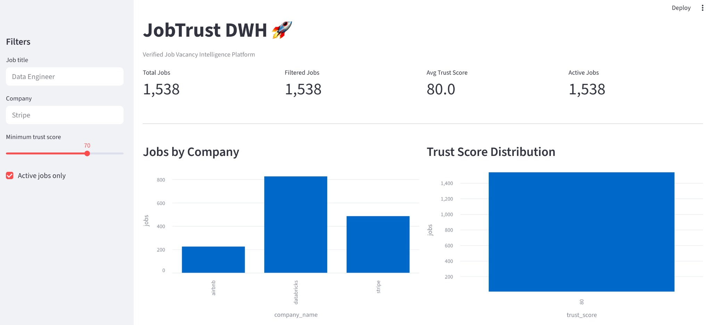
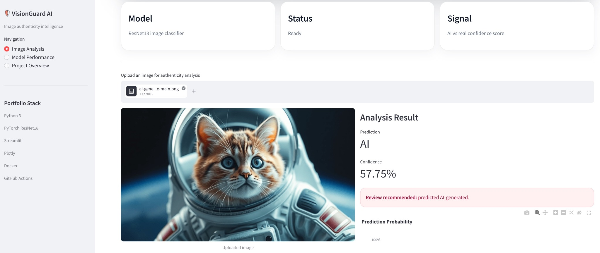

Pipeline architecture
Batch and near-real-time ingestion with Airflow, Kafka, Python, and SQL-first transformation workflows.
Seattle, WA · Data Engineering · Financial Data Systems
Data Engineer and Analyst with 10+ years of experience building data pipelines, enterprise warehouses, SQL optimization workflows, and reporting systems for financial data.
Batch and near-real-time ingestion with Airflow, Kafka, Python, and SQL-first transformation workflows.
Enterprise reporting layers, dimensional models, reliable metrics, and governed analytical datasets.
Query tuning, indexing, data quality improvement, and dashboards that support decisions at scale.
Selected engineering work
Each project is designed to show end-to-end execution: ingestion, modeling, orchestration, deployment readiness, and recruiter-friendly documentation.

End-to-end warehouse for verified job-posting intelligence, combining multi-source ingestion, trust scoring, freshness checks, and suspicious-posting detection.

Image-authenticity platform that classifies AI-generated visuals with probabilistic scoring, model inference, and a clear product-style interface.
Experience
Sep 2022 – Nov 2024
Architected pipelines processing 5M+ transactions/day, optimized SQL workloads by up to 30%, built fraud-detection features, automated regulatory reporting, and developed scalable batch and real-time ETL flows.
Sep 2014 – Sep 2022
Architected and scaled enterprise data warehouse capabilities, built credit-risk data models, integrated banking systems into unified reporting layers, and delivered executive dashboards in Tableau and Oracle BI.
Technical foundation
SQL, PL/SQL, query tuning, indexing, partitions, execution plans, stored procedures, CTEs, window functions.
Oracle, PostgreSQL, ClickHouse, Snowflake, data warehousing, data modeling, ELT pipelines.
AWS EC2, S3, RDS, Lambda, Redshift, Glue, Docker, Git, Linux, deployment fundamentals.
Oracle BI, Tableau, dashboard development, reporting automation, visualization, business metrics.
Open to data engineering roles
Seattle, WA · Available for Data Engineer, Analytics Engineer, SQL Developer, and Cloud Data roles.